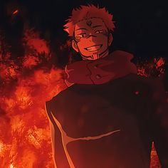
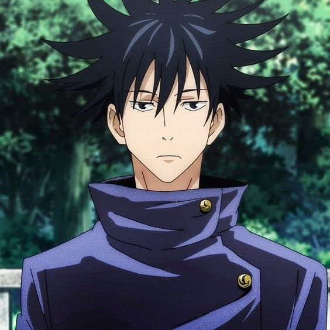
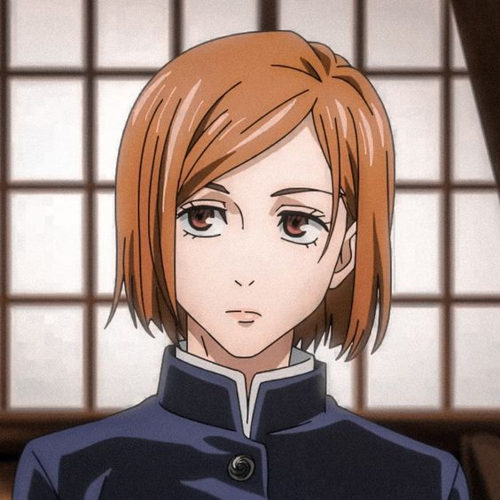
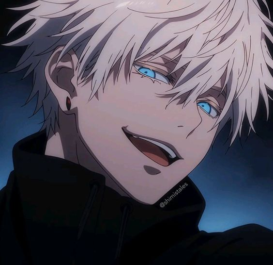

ตัวละครหลัก
1.อิตาโดริ ยูจิ (虎杖悠仁) อายุ 15 ปีคุณไสย : ไม่มี เน้นคลุมพลังไสยเวทที่หมัด เตะต่อยศัตร
เด็กหนุ่มผู้มี พลัง เหลือล้น เป็นที่หมายปองของกลุ่มชมรมกีฬา แต่กระนั้นตัวเขาเองกับเข้าชมรมเรื่องลึกลับซะนี่ เป็นตัวละครเอกที่มีพลังกายเยอะ มี ความสามารถพิเศษ ตามแบบฉบับ การ์ตูน สายโชเน็น นิสัยเป็นคนที่คิดและทำเลยออกจะตรงๆ หุนหัน ไปหน่อย มี ความสามารถพิเศษ ในการเป็นภาชนะดูดกลืนพลังคำสาป สามารถเปลี่ยนเป็นสุคุนะสองหน้า เทพอสูรเทียม(ราชาแห่งคำสาป) ผู้ทรง พลัง เมื่อพันปีที่แล้ว ข้อมูลเพิ่มเติม ตัวละคร ยูจิจะยึดมั่นในคำพูดสั่งเสียของปู่มากนั่นคือ “การใช้พลังของตัวเองเพื่อช่วยเหลือผู้อื่น” (ประวัติพ่อ แม่ ของยูจิยังเป็นความลับอยู่ต้องรอเปิดเผยอีกที่ในอนาคต) ตอนหลัง ได้รับการฝึกฝนการใช้ไศยเวทย์จากโกโจ ทำให้เขาสามารถใช้งานไศยเวทย์ได้ในที่สุด โดยส่วนใหญ่จะเน้นใช้ไศยเวทย์ออกไปทางเตะต่อย และด้วยพลังที่เหลือล้น จึงสามารถต่อสู้กับวิญญาณคำสาปได้อย่างไม่มีปัญหา
2.เรียวเมน สุคุนะ
คุณไสย : ฟาดฟัน,ธนูเพลิง,วิถีเงาชินิคามิ
เทพอสูรในตำนาน ปีศาจที่ถูกผนึกไว้มี2หน้า4แขน เป็นปีศาจที่แข็งแกร่งนิสัยดุร้าย ออกจะกวนๆไปหน่อย ถูกเหล่าผู้ผนึกมารปราบแต่ไม่สามารถทำลายได้จึงแยกเป็นชิ้นผนึกไว้กลายเป็นคำสาปพิเศษ ต่อมาถูก อิตาโดริ ยูจิ กินนิ้ว(1ในชิ้นส่วนที่ถูกแยกผนึก)เข้าไปเลยต้องจำใจทำข้อตกลงแต่ก็ยังรอโอกาสที่จะชิงร่าง อิตาโดริ ยูจิ มาเป็นของตัวเองต่อไป วิชาที่ถนัดคือกางอาณาเขต:อารามสงฆ์ซ่อนมาร รูปลักษณ์คือ อารามสงฆ์ของพระที่ถูกเปลี่ยนให้เป็นที่สักการะบูชาปีศาจ เต็มไปด้วยหมอกสีเลือดและความตาย ศัตรูที่อยู่ในระยะจะถูกฟันและผ่าซีกโดยไม่สามารถตั้งรับอะไรได้เลย การโจมตีจะดำเนินต่อไปเรื่อยๆ จนกว่าศัตรูจะสิ้นลมหายใจ เรียวเมง สุคุนะ นั้นได้ มีการกล่าวถึงในตำนานพื้นบ้านตามแต่ละภูมิภาคของประเทศญี่ปุ่น อย่างแถบฮิดะนั้น เรียวเมง สุคุนะ ที่ถูกบันทึกว่าเป็นปีศาจร่างกายสูงใหญ่มี2หน้า4แขน พละกำลังมหาศาล ชมชอบการฆ่าฟัน ทำร้ายผู้คนที่พบเจอจนทำให้ จักรพรรดิ นินโตกุ ส่งยามาโตะ ทาเครุ โนะ มิโคโตะไปปราบ แต่ถ้ามาทางแถบกิฟุจะเปรียบ เรียวเมง สุคุนะเสมือนเทพเจ้ามี2หน้า4แขนเปรียบกับแสงสว่างและความมืด คอยกำจัดปีศาจร้าย หรือบางตำนานก็กล่าวว่า เรียวเมง สุคุนะ เป็นมนุษย์เกิดในตละกูลใหญ่ ชอบช่วยเหลือผู้คน เป็นที่รักใคร่ของชาวบ้านในเวลานั้น เป็นเหตุให้คนใหญ่คนโตในตอนนั้น ไม่ชอบหาเรื่องกลั่นแกล้งและอ้างสุคุนะเป็นปีศาจเพื่อกำจัดทื้งเสีย ปัจจุบัน มีรูปบูชา เรียวเมง สุคุนะ อยุ่ที่วัดในจังหวัดกิฟุ

3.ฟุชิงุโระ เมงุมิ (伏黒 恵) อายุ 15 ปี
คุณไสย : วิถีเงาชินิคามิ คือการเรียกชินิคามิออกมา ตามสัญลักษณ์มือ มีลักษณะเป็นสัตว์ต่างๆ
-
-
-
-
-
-
-
-
เด็กหนุ่มผู้เงียบขรึม ออกจะเย็นชาดูไม่ยี่หระ หรือทุกข์ร้อนใจกลับเรื่องต่างรอบๆ ตัวนักเท่าไหร่แต่ลึกๆแล้วเป็นคนดีรักพวกพ้อง(สึนเดเระสินะ)จะช่วยเหลือคนที่คิดว่ามีค่าพอที่จะให้ช่วยซึ่งต่างจาก ยูจิที่อยากจะช่วยเหลือทุกคน เมงุมิ เป็นนักเรียนโรงเรียน จูจุทสึ(โตเกียว) ปี1 เป็นผู้มีพลังคุณไสยระดับ2 พลังของเขาคือ ใช้มือทำเป็นสัญลักษณ์เรียก ชิกิงามิ ออกมาจากเงา ชิกิงามิที่เมงุมิเรียกออกมามีความหลากหลาย พลิกแพลงได้ตามสถานการณ์มีพลังมากแต่ก็แลกมากลับที่เมงุมิไม่สามารถใช้อาวุธไสยเวทร่วมในการต่อสู้ได้(ในอนาคตไม่แน่อาจจะพัฒนาขึ้นใช้ร่วมได้) ข้อมูลเพิ่มเติม ฟูชิงุโระ เมงุมิ มีพ่อเป็นคนของตระกูลเซนอิน(1ใน3ตระกูลใหญ่ที่มีอิทธิพลมากในเหล่าจูจุทสึ)จึงทำให้เขามีสายเลือดที่พิเศษในวัยเด็ก เมงุมิ ถูกพ่อตัวเอง(โทจิ)ขายให้กับตระกูลเซนอินแต่ถูกอาจารย์โกะโจที่ไม่ต้องการให้เขาไปอยู่กับตระกูลเซนอินได้เข้ามาขอดูแลเขาเอง เมงุมิ ยังมีพี่สาว(ต่างสายเลือด)ที่ตอนนี้ถูกคำสาปเล่นงานให้อยู่ในสภาพเจ้าหญิงนินทราเมงุมิหวังว่าสักวันหนึ่งเขาจะสามารถลบล้างคำสาปและช่วยเหลือพี่สาวให้ฟื้นขึ้นมาอีกครั้ง

4.คุคิซากิ โนบาระ (釘崎野薔薇) อายุ 16 ปี
คุณไสย : ตุ๊กตาฟางสาปแช่ง
-
เด็กสาวผู้มีความมั่นอกมั่นใจเต็ม100 เป็นคนที่มีความมั่นใจในตัวเองสูง ไม่ชอบให้ใครมาดูถูกรูปร่างหรือหน้าตัวเอง -บุคลิคเป็นคนออกจะสนุกสานานเฮฮาแต่ขี้วีนหน่อยๆเป็นประเภทที่เวลาต่อสู้มักจะพูดแบบ น้ำไหลไฟดับ เข้ามาเรียนในโรงเรียนจูจุทสึ(โตเกียว) เป็นผู้ที่มีพลังอาคมระดับที่3 พลังในการต่อสู้ของโนบาระนั้นคือใช้หุ่นฟาง ตะปู และค้อน ในการสาปใส่ศัตรูด้วย โดยจะใช้เศษชิ้นส่วนหนึ่งของศัตรูเพื่อใช้เป็นสื่อนำให้กับหุ่นฟางและใช้ค้อนตอก ตะปู ลงไปในหุ่นเพื่อจัดการศัตรู ในระยะไกล โนบาระมีเพื่อนสาวที่เธอชอบคิดถึงอยู่คนหนึ่ง(ยังไม่เปิดแผยข้อมูลพื่อนสาวคนนี้) ที่จะชอบเล่าให้เธอฟังถึงโตเกียว จึงเป็นเหตุผลหลักๆให้โนบาระมาเรียนที่โตเกียวนี้ ข้อมูลเพิ่มเติม คำสาปที่ คุกิซาคิ โนบาระ นั้นใช้เป็นคำสาปที่มีอยู่จริงในประเทศญี่ปุ่น ชื่อคำสาปนั้นคือ“อุชิ โนะ โคะคุไมริ”หรือ “พิธีกรรมสาปแช่ง” ที่เกิดจากความเชื่อโบราณของคนญี่ปุ่น มีมาตั้งแต่สมัยเอโดะ (ค.ศ.1603 – 1868) เป็นพิธีที่ใช้สาปส่งคนที่ไม่ชอบ คนที่เกลียด คนที่เป็นศัตรู หรือคนที่มีความเครียดแค้นเป็นการส่วนตัว มุ่งหวังให้คนผู้นั้นได้พบเจอกับความโชคร้ายหรือถึงกับความตาย โดยการใช้เส้นผมหรือชิ้นส่วนต่างๆอาทิเช่นเล็บมือ เล็บเท้า ฟัน ของเหยื่อผูกกับตุ๊กตาฟางและใช้ค้อนตอกตะปูใส่ตุ้กตาฟางบนต้นไม้ที่ตั้งอยู่ในศาลเจ้าในช่วงเวลาตี 1 – 3 และต้องทำติดต่อกัน7วัน มิฉะนั้น คำสาปจะไม่ได้ผลและจะย้อนกลับมาหาคนที่ใช้อีกด้วย

5.
โกะโจ ซาโตรุ (五条悟) อายุ 28 ปี
คุณไสย : ความว่างเปล่า ,คืนชีวิต
-
ชายมาดกวน ผมสีขาว ตาสีฟ้า แต่สวมใส่ผ้าปิดตาตลอดเวลา เป็นอาจารย์ของยูจิ เมงุมิ และโนบาระ เป็นอัฉริยะในรอบ 100 ปี จะมีคนนึง บุคลิกเป็นคนเฮฮาอยู่ตลอดเวลา ไม่เคยรู้สึกทุกข์ร้อนหรือรู้สึกอะไร แต่ก็สามารถสอนนักเรียนให้เข้าใจได้ง่ายโดยการเปรียบเทียบกับอะไรง่ายๆ และหากเอาจริง เขาคือคนที่น่ากลัวที่สุดคนนึงเลย ในอดีตเคยทำงานคุ้มกันร่างสถิตเท็นเก็น ร่วมกับเกะโท แต่ด้วยภารกิจที่ล้มเหลว ประกอบกับถูกโทจิจู่โจมจนบาดเจ็บสาหัส ทำให้เขาสามารถใช้วิชาคืนชีวิตกับผสานแดงฟ้าได้สำเร็จ หลังชนะโทจิ รับเมงุมิมาเลี้ยง เพื่อไม่ให้ข้องเกี่ยวกับตระกูลเซนอินอีก และหลังจากเหตุการณ์นั้นไปหลายปี เขาก็กลายเป็นอาจารย์ของสถาบัน โดยมีศิทย์คนแรกคือยูตะ อาคมของซาโตรุนั้น อาคมแรก"ขีดจำกัดบน" คือการทำให้ทุกอย่างอยู่ในสภาวะหยุดนิ่ง คือสภาวะเป็นกลาง อาคมที่สองคือสร้างแรงดึงดูดขึ้นมา หรืออาคม"สีฟ้า" อาคมที่สามคือ การสร้างแรงดีดออก หรืออาคม"สีแดง" และอาคมที่สี่ ความขัดแย้ง หรือ"ม่วง" เกิดจากการนำอาคมสีฟ้าและอาคมสีแดงผสานกัน เกิดเป็นลูกบอลสีม่วง ที่มีพลังทำลายล้างสูงสุด นอกจากนี้ ยังใช้วิชาคืนชีวิต และวิชา "กางอาณาเขต:ขอบเขตไร้สิ้นสุด" วิชาขั้นสูงที่ผู้ถูกพลังคุณไสยของโกโจนั้น จะถูกบังคับให้รับรู้จากประสาทสัมผัสทั้ง 5 ทุกอย่างจนไม่สามารถขยับได้

-
-
-